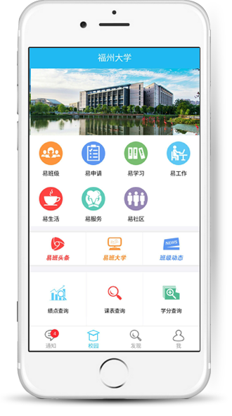
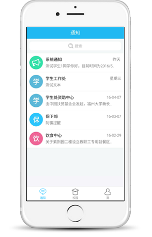

易班校本化平台
校本化的易班 不一般



易班校本化平台
校本化的易班 不一般
《易班校本化平台》旨在帮助高校搭建本校特色的易班门户，以服务为基础、管理为抓手、教育为目的，以《易班网》和《学生工作管理系统》为轴心，根据高校实际工作需求，与各高校的教务、后勤、图书、财务、就业等系统对接，促进高校智慧校园建设，协助高校顺利的开展网络思想政治教育。平台渗透学生在校学习、生活的方方面面，实现从新生入学到毕业的全程管理与服务。
易班头条
易班大学
班级动态
易班学院
优课YOOC
...
对接
大学生医保平台
勤工俭学平台
教育培训平台
校友平台
志愿者平台
创业就业平台
...
对接
奖助贷
勤工俭学
迎新服务
辅导员考核
综合测评
晚点汇报
...
对接
教务系统
校社区论坛
后勤系统
财务系统
就业系统
图书管理系统
...
对接
平台与易班网直通，实现无缝对接
强大的消息盒子，校方通知，一键发送消息必达，高效便捷；
自带标准化学工子平台，为学生工作管理提供全方位信息化服务；
提供高效的共享子平台接口，可快速实现与高校现有业务系统的对接；
融合了各类丰富的扩展应用，如勤工俭学、教育培训、创业就业等。
以前从来都不知道易班，但用了之后发现还是不错的，就像为我们量身定做一样，挺喜欢的。
潘*萍丨福州大学
在此之前，我从来没有想过会有这样一个软件，可以包括这么多的功能；有一些地方还需要改进，期待~
赵*阳丨福州大学
用起来还是蛮方便的，包含了在校所要用到的所有功能，不过有一些小地方还是需要优化一下啦。
李*文丨福建工程学院
易班我知道，但是易班校本化我确实是第一次听说。挺实用的，不错。
林*西丨福建对外经济贸易职业技术学院